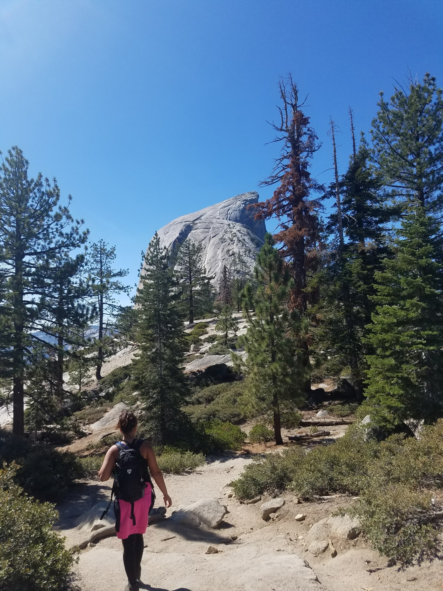

Hiking
My partner and I regularly go hiking with a group of friends. We haven't been able to really do that since th beginning of the year. Our favorite hike was Half-Dome in Yosemite. We hiked it with four of our friends back in 2017. The first photo show about 2 hours into the hike looking back down from where we came up. The second photo is about 3 hours in showing how far we are from the dome. The last one is almost reaching the Dome itself. We made it halfway up the dome and got to the cables before we hit a stand still. A lady was having a freak out and the cables hadn't moved in an hour so we never got to the tip-top. But We made it. A 12 hour round trip hike!


